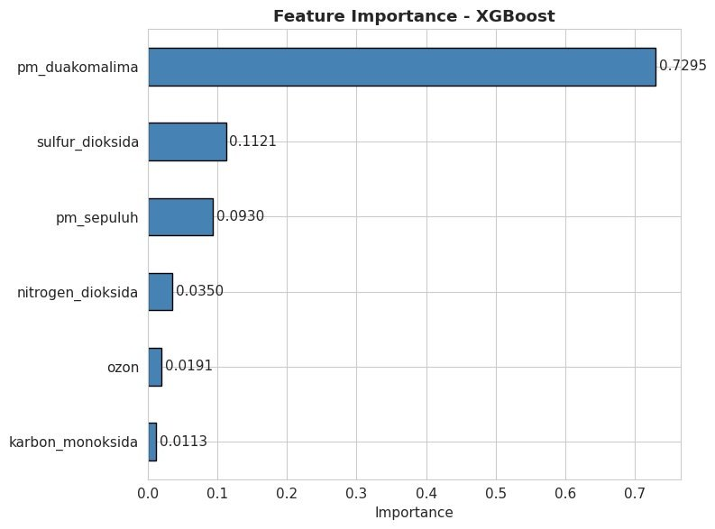

Open to Data Analyst, BI and Business Analyst roles
Hi, I'm Reinaldy. I turn business questions into clear, data-backed recommendations.
Computer Science graduate from BINUS University with a year of System Analyst internship experience and RevoU Full Stack Data Analytics training. Below are seven business cases in banking, healthcare, retail and e-commerce, plus my machine learning thesis.
- Tools
- SQL, Python, Tableau, Excel and Google Sheets
- Education
- Computer Science, BINUS University, GPA 3.44
- Experience
- 1 year System Analyst internship
- Portfolio
- 7 business cases and 1 ML thesis
Projects
Seven business cases from RevoU, newest first. Each card shows the background, method, result, my role and the scope. Open a case study for the full analysis and the original files.
Showing all 7 projects
-
What predicts a bad loan at a retail bank
- My role
- End-to-end analyst: problem framing, SQL, modelling, dashboard and 18-slide deck.
- Scope
- 682 loans, 4,500 accounts, 1.05M transactions
- Background
- The bank's problematic loan rate is 11.1%. The credit team wants it below 5% using signals available before a loan is paid out.
- Method
- Joined 8 tables in DuckDB, ranked risk drivers by lift, built a logistic regression risk score and a Tableau dashboard.
- Result
- Every pre-loan overdraft account defaulted. Two pre-loan reviews bring the rate from 11.1% to 5.0%.
-
Tracking IDR 14.5 billion of uncollected hospital revenue
- My role
- Dashboard designer for the finance lead, from data model to 19-slide report.
- Scope
- 2 years of admissions, 8 branches
- Background
- IDR 14.5 billion (14.7%) of net revenue across eight branches is still unpaid.
- Method
- Modelled 5 tables at admission level and built 8 Tableau views with LOD expressions and table calculations.
- Result
- Self-pay patients are 13% of admissions but hold 30% of pending revenue. Recommended a network-level deposit policy.
-
Finding which credit card customers can safely spend more
- My role
- Data cleaning, feature engineering, clustering and a 40-slide deck.
- Scope
- 5,599 cards, 2,000 users
- Background
- RevoBank earns a 1.5% fee on card spending but 38% of cardholders made no transaction in six months.
- Method
- Built RFM, DTI and credit limit features, transformed skewed data and segmented customers with K-means.
- Result
- Only 253 dormant customers are safe to reactivate, worth about Rp261 million in extra fees.
-
Which grocery categories drive revenue, and why
- My role
- Query writing, interpretation and a 17-slide deck.
- Scope
- 3 tables: sales, products, categories
- Background
- Management needs to know which grocery categories drive revenue, and why.
- Method
- Wrote 9 BigQuery queries with joins, CTEs and window functions, each framed with OBIPR.
- Result
- Revenue follows units per customer, not reach. The top four categories bring in about 44%.
-
What drives an e-commerce customer's yearly spending
- My role
- Statistical modelling in spreadsheets and a 12-slide deck.
- Scope
- 299 customers, 6 candidate drivers
- Background
- TokoBli wants to know what drives yearly spending and what a new customer will likely spend.
- Method
- Correlation matrix, multiple regression with stepwise elimination and a multicollinearity check.
- Result
- Five variables predict yearly spending with an adjusted R² of 0.927. Session time matters most.
-
Evaluating twin-date campaigns and a product page A/B test
- My role
- Data cleaning, statistical testing, an 11-sheet workbook and an 18-slide deck.
- Scope
- 4,217 transactions, 3 campaigns
- Background
- TokoBli ran 10.10, 11.11 and 12.12 campaigns and tested a new product page.
- Method
- Cleaned the data, removed outliers with IQR, compared campaigns and ran a Welch t-test.
- Result
- 11.11 earned the most revenue (Rp6.81B), 10.10 had the best discount efficiency (55.0). The new page lifted order value by 11%.
-
Why Corporate profit fell while sales grew
- My role
- Problem framing and recommendations from an existing dashboard, 13-slide deck.
- Scope
- Corporate segment, Superstore dataset
- Background
- Total sales rose 20.4%, yet Corporate segment profit fell 13.6%.
- Method
- Structured the problem with DARCI, a SMART statement, an issue tree and OBIPR.
- Result
- Furniture is the only shrinking category (down 56.6%). Recommended a 15% discount cap.


Thesis
JakU: classifying Jakarta's air quality with machine learning
We compared Random Forest, XGBoost and SVM on official ISPU readings using CRISP-DM, then built a Streamlit dashboard with a User-Centered Design process so residents can check the air and simulate predictions.
- My role
- Led the machine learning model and Streamlit dashboard development
- Scope
- Team of 3, ISPU data from 5 stations, 3 models compared
- 97.71%
- test accuracy with XGBoost
- 0.9634
- macro F1 on imbalanced classes
- 53 of 53
- Unhealthy days caught in the test set
- 78.28
- usability score (SUS), benchmark is 68

From the thesis data: in 700 days of readings, Jakarta had only 14 days of good air.
About me
Computer Science graduate from BINUS University, specialized in Data Analytics, with internship experience as a System Analyst. I work with SQL, Python, Tableau and spreadsheets to turn data into business insights, from campaign and product performance reports to machine learning models. I start by understanding who needs the answer and what they will do with it.
Education
- Jul 2022 to Jul 2026BINUS UniversityBachelor of Computer Science, GPA 3.44/4.00. Data Analytics specialization. Thesis on machine learning air quality classification for DKI Jakarta.
Certification
- Jul 2026 to Oct 2026Full Stack Data Analytics, RevoUSQL, Python, statistics, Tableau and a capstone project.
Work experience
- Feb 2025 to Feb 2026System Analyst (Internship), PT. Pratama Solusi Teknologi
- Wrote BRD, SRS, PRD and a System Analysis Report for the Ogan Lopian app with Diskominfo Purwakarta.
- Created 20 UML diagrams, ERDs and flowcharts, and ran UAT for 2 systems.
- Built a Random Forest model for social assistance eligibility with 90% accuracy, inside a dashboard.
- Analyzed Google Play reviews for sentiment and built 5 Node.js authentication features.
Organization and volunteering
- Nov 2022 to Apr 2026Volunteer, Teach For IndonesiaFour community and school outreach programs in Jakarta and Bogor, including a Ramadan aid distribution with Tzu Chi.
- Sep 2019 to Nov 2021Secretary, Japanese ClubActivity reports, meeting minutes, scheduling and record keeping.
Technical skills
Data Analysis
- Data Cleaning
- Exploratory Data Analysis (EDA)
- Statistical Analysis
- Regression Analysis
- Hypothesis Testing
- Customer Segmentation (RFM)
- Sentiment Analysis
- Business Problem Solving
- Campaign Performance Analysis
- Product Performance Reporting
Programming and Databases
- Python (Pandas, Scikit-learn, Matplotlib, Plotly)
- SQL (Joins, CTEs, Window Functions, Aggregations, Filtering)
- Node.js
Machine Learning
- Classification
- Clustering
- XGBoost
- Random Forest
- Support Vector Machine (SVM)
- K-Nearest Neighbors (KNN)
- Decision Tree
- K-Means
- Sentiment Analysis
Business Intelligence and Data Visualization
- Tableau
- Streamlit
- Microsoft Excel
- Google Sheets
System Analysis and Documentation
- BRD
- SRS
- PRD
- Use Cases
- UML
- ERD
- Flowcharts
- User Manuals
- System Analysis Reports
System Testing
- Functional Testing
- Cross-Device QA Testing
- User Acceptance Testing (UAT)
- Bug Documentation
Methodologies and Frameworks
- CRISP-DM
- Rapid Application Development (RAD)
- Agile
- Waterfall
- User-Centered Design
- DARCI
- Issue Tree
- System Usability Scale (SUS)
- OBIPR
- SMART
- MECE
Tools, soft skills and languages
Tools
- Google Colab
- Visual Studio Code
- Git/GitHub
- JASP
- Figma
- Draw.io
- Jupyter Notebook
- SQL Server
- RapidMiner
- BigQuery
Soft Skills
- Analytical Thinking
- Business Insight
- Problem-Solving
- Communication
- Teamwork
- Attention to Detail
Languages
- Indonesian (Native)
- English (Professional Working Proficiency)
Hiring for a data role? Let's talk.
- Emailreinaldizulfanandaarkaan@gmail.com
- WhatsApp+62 822 9747 1234
- LocationPurwakarta, West Java